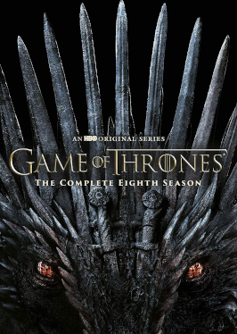

<!DOCTYPE html>
<html>
<head>
<link rel
<title></title>
</head>
<body>

</body>
</html>

<center>
    <font size="10" color="#E8BEEE" >Game of thrones</font>
    <br><br><br>
   
    <th></th> </center>


    Game of Thrones ir amerikāņu fantāzijas drāmas televīzijas seriāls, ko HBO izveidojuši Deivids Beniofs un DB Veiss . Tā ir Džordža RR Martina fantāzijas romānu sērijas A Song of Ice and Fire adaptācija,no kurām pirmā ir Troņu spēle . Izrāde tika uzņemta Apvienotajā Karalistē , Kanādā , Horvātijā , Islandē , Maltā , Marokā un Spānijā .. Tā pirmizrāde notika HBO kanālā ASV 2011. gada 17. aprīlī un noslēdzās 2019. gada 19. maijā ar 73 sērijām, kas tika pārraidītas astoņu sezonu laikā.

    Filmas Game of Thrones darbība notiek izdomātos Vesterosas un Esosas kontinentos, un tajā ir liels dalībnieku sastāvs , un izrādes laikā tā seko vairākiem stāstu lokiem .
